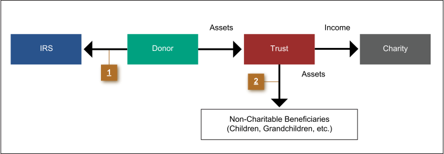

Wealth Transfer Strategies: Charitable Lead Trusts
With a charitable lead trust (CLT), once the donor makes a contribution to the trust, it is the charity that enjoys the benefit of income from the contribution for a period of time. When the trust terminates, assets are transferred to beneficiaries designated by the donor.
The following features are found in the trust document of a charitable lead trust:
- Similar to a charitable remainder trust, a charitable lead trust may be structured to pay income either as a charitable lead annuity trust (CLAT) or charitable lead unitrust (CLUT).
- The trust may last for the lifetime of the donor or another individual named by the donor, or for a specific number of years. Unlike a CRT, there is no limit of 20 years if a specific number of years is chosen.
- The trust can be structured as a revocable grantor trust, but it is more commonly structured as an irrevocable, non-grantor trust, in which case the trust gets the charitable income tax deduction instead of the donor.
- Unlike a CRT, no minimum payout is required.
The diagram below outlines the mechanics of a charitable lead trust. More detail can be learned by reading the material contained in each of the numbered bullets.
Click each to learn more.
